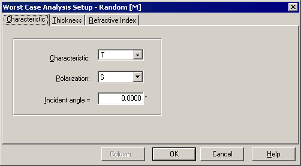

Worst Case Analysis Characteristics
Worst Case Analysis Characteristics
Navigation: OptiLayer Menu Commands > Analysis Menu > Worst Case >
Worst Case Analysis Characteristics
` <error_yield_window.html>`__ ` <idh_menu_analysis.html>`__ ` <idh_worstcase_analysis_setup_t.html>`__
Worst-case option min principle could be analyzed by considering all possible thickness combinations as shown above, but unfortunately, this number is growing too rapidly as a 2N function. For 100 layers coating the number of combinations is 2100=1267650600228229401496703205376, which is too high even for modern powerful computers. Therefore, we are using a different approach. For each wavelength and angle of incidence, we are searching for a combination of deviations within specified limits that provide the maximum deviation of the spectral characteristic from the target value. This search is performed with an optimization algorithm, but instead of minimizing a merit function, we are maximizing the mentioned deviation. Furthermore, we are maximizing the deviation in two possible directions from the current value of the spectral characteristic. This is how two surrounding curves (+Dev and -Dev) are obtained. In general, for different wavelengths and angles of incidence, we should obtain different values of deviations, which is an unphysical solution since the deviations cannot depend on the wavelength/AOI. Therefore, the obtained deviation is an upper estimation of the deviation, and any real deviation should be smaller than these values. From these considerations, it is clearer why this option is called Worst Case Error Evaluation.
Use the Characteristic page of the Worst Case Analysis Setup window to set the spectral characteristic for the Worst Case Analysis. The Worst Case Analysis can be performed only for one characteristic, one polarization state, and one angle of incidence at a time. As in the other OptiLayer dialogs, in the Angular mode, the choice of angle of incidence is replaced by the choice of wavelength.

See also: